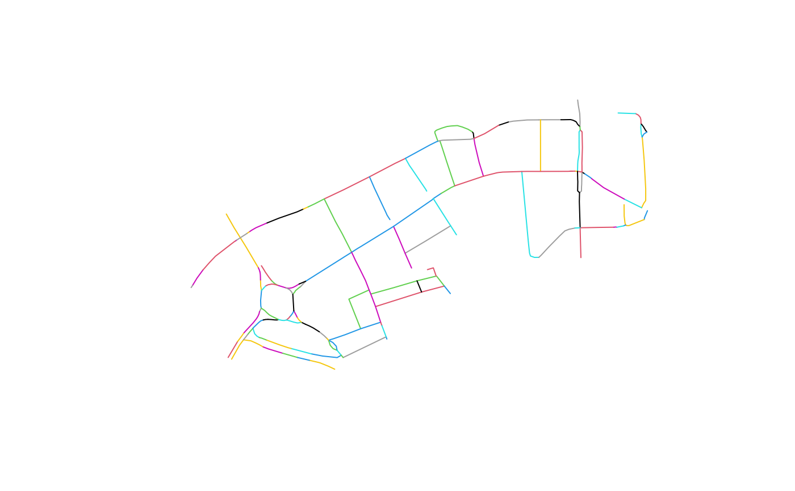
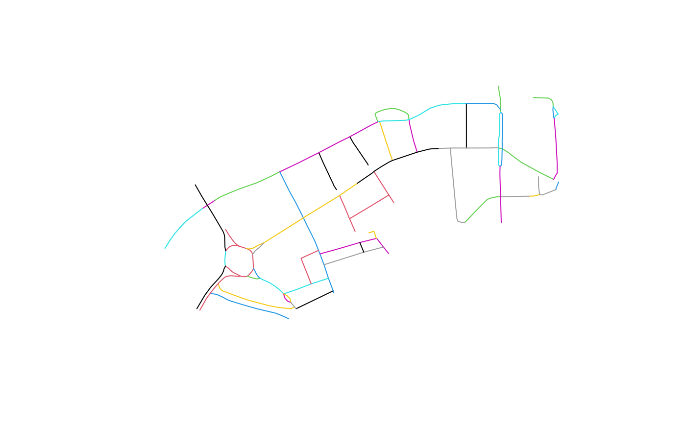

Consolidate roads into simplified network
osm_consolidate(x, segment = 500)
| x | a SF data frame of OSM linestrings with projected CRS |
|---|---|
| segment | numeric, max length of segments in metres |
Returns an data frame of LINESTRINGS
This function simplifies a OSM road network by: 1) grouping small
road segments into single names roads 2) splitting long roads into sections
are defined by segment 3) Casting MULTILINESTRINGs into LINESTRING
Note: to avoid splitting short roads, roads are only split once they are 2x
segment, but are then splits into lengths as defined by segment. For
example a 600m road will not be split, but a 1100m road will be split into
approximately 500m segments when segment = 500.
Other OSM:
cluster_junction(),
line_segment_sf(),
nn_line(),
nn_point(),
osm_get_junctions(),
osm_main_roads()
library(sf) osm = osm_main_roads(tc_data_osm) x = sf::st_transform(osm, 27700) osm_consolidated_200m = osm_consolidate(x, segment = 200)#> Warning: repeating attributes for all sub-geometries for which they may not be constant#> [1] 125#> [1] 0.456#> #> Alaska Street Aquinas Street Barge House Street Bear Lane #> 1 1 2 1 #> Belvedere Road Blackfriars Road Broadwall Burrell Street #> 6 8 1 5 #> Coin Street Colombo Street Cornwall Road Duchy Street #> 2 2 5 2 #> Exton Street Hatfields Hopton Street Mepham Street #> 1 1 6 5 #> Paris Garden Rennie Street Secker Street Southwark Street #> 1 1 1 5 #> Stamford Street Station Approach Tenison Way Theed Street #> 8 5 1 2 #> Upper Ground Waterloo Bridge Waterloo Court Waterloo Road #> 13 6 1 11 #> Whittlesey Street Windmill Walk York Road #> 1 1 10#> #> Alaska Street Aquinas Street Barge House Street Bear Lane #> 1 1 1 1 #> Belvedere Road Blackfriars Road Broadwall Burrell Street #> 2 4 1 3 #> Coin Street Colombo Street Cornwall Road Duchy Street #> 2 1 1 2 #> Exton Street Hatfields Hopton Street Mepham Street #> 1 1 4 1 #> Paris Garden Rennie Street Secker Street Southwark Street #> 1 1 1 1 #> Stamford Street Station Approach Tenison Way Theed Street #> 5 1 1 1 #> Upper Ground Waterloo Bridge Waterloo Court Waterloo Road #> 4 2 1 6 #> Whittlesey Street Windmill Walk York Road #> 1 1 2#> Min. 1st Qu. Median Mean 3rd Qu. Max. #> 3.305 15.983 31.259 50.765 73.663 338.175#> Min. 1st Qu. Median Mean 3rd Qu. Max. #> 19.86 45.04 99.97 111.33 151.15 322.69